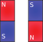
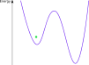

14. Classical Ising Model#
Quantum computers, which will be ideal, will only require knowledge of computer science. But the quantum computers that we have today require a bit of understanding of the underlying physics. So we have to go through a classical model of statistical mechanics, which is called the classical Ising model, to understand what happens in some quantum computers that we can use today. So let’s start by introducing a spin system. A spin is a two-state system. So for instance, you can think of a magnet having north face pointing up or south face pointing up. And you know if you take two magnets and you approach them, then they want to antialign. So this will be their optimal energy configuration. So if you identify random variables with them– for instance, this is some random variable sigma one, this is some random variable sigma two– and you say that the north face pointing up is the value plus 1 and this is the value minus 1, then you can write down that the energy of this system is, say, sigma one times sigma two. And in this case, it’s going to be minus 1, so we look for the lowest energy solution. And this is what nature naturally finds.
14.1. Hamiltonian#
Now if we add one more magnet, then that is also going to antialign with its nearest neighbor. So this is going to be plus 1 for some sigma three. So we can write another term here, which is sigma two times sigma three. And we can write it as a sum over nearest neighbors.
So this notation stands for nearest neighbors. And we are going to have sigma i sigma j. This term describes the energy of this system and we want to minimize it, but nature naturally minimizes it. Now, let’s make it a little bit more complicated and assume that there is some wall that you can control. So with this, you can change the strength of interaction between the individual pairs of magnet. In other words, you can change the coupling strength between them. So we model this by having some coefficient with each of the pairs of the interactions. Now to complicate it even more, we can add an external magnetic field below each and every one of these individual magnets, which in theory, can be a lot bigger than the interaction strength between the magnets.
Say, each of these are north facing up. So now, if this magnetic field is strong enough, then it can flip, for instance, this magnet upside down. So there will be some frustration between these two, but the strength of this magnetic field will override this interaction. So we model this external field by adding one more term here, which is going to be the strength of that field– Hi– times the actual sigma i value– the value of the random variable in that spot.
So this is actually a very hard problem to solve for nature because what happens– and if you look at the energy landscape of this problem, then what can happen is that for instance, the magnets naturally align, they flip, but they might get stuck in some local optimum. So it’s possible that by overcoming this barrier, they would be able to attain a better configuration, which is the actual lowest energy solution. But since there isn’t enough energy for the system to hop out from here, it’s stuck in this local optimum. And this is exactly the same kind of problem that we see in computer science in certain NP-hard problems. So if you look at something that’s called a quadratic unconstrained binary optimization problem, it actually has a very similar form. Y ###!!Computational complexity drawing An NP hard problem
you have binary variables $\(x_{i}x_{j}\)\(, and you have some interaction strength between them \)W_{ij}\(. They have coefficients. And you also have a bias term effecting individual random variables \)b_{i}x_{i}$. And on a classical computer, in the general case, this takes exponentially many evaluations to find the global optimum because you have the same problem. You would otherwise get stuck in some local optimum. So there is this very natural correspondence between what is computationally hard and what’s physically difficult to solve. And just by convention, we typically put a minus sign here and we change this into a minus sign. So the actual coupling strengths are opposite sign to what I describe here. But apart from that, this describes the energy of the system. And the operator or what is equation that describes the energy of the system is called a Hamiltonian.
14.1.1. Check#
• What happens if all \(J_{ij}\) couplings are zero?
– The spins do not interact with each other.
• The quadratic unconstrained binary optimization (QUBO) problem is known to be NP-hard, but there are easy cases. Which is an obviously easy case of the following?
– \(W_{ij}\) and \(h_{i}\) are positive
• If you let the spins find the minimum energy configuration starting from a random one, they might not find the global energy minimum and get trapped in a local minimum.
– True
The concepts to be introduced in this notebook, such as the Ising model, simulated annealing, and the transverse Ising model, play an important role in today’s quantum algorithms and quantum computing paradigms, including quantum annealing, the quantum approximate optimization algorithm, and quantum-enhanced sampling. Here we give some insight on how these physical building blocks work.
14.2. The Ising model#
We would like to make a connection between the computational hardness of a problem and how difficult it is to solve a corresponding physical system. The Ising model is the most basic model to do this. It is an extensively studied model and one of the most basic examples to teach statistical mechanics and phase transitions, but we only require an elementary understanding of it.
Imagine that you have two magnets fixed on the same axis.

They will naturally anti-align: one will have north pole facing up, the second the south pole facing up. We can think of them as two binary variables, \(\sigma_1\) and \(\sigma_2\). Say, if the north pole is facing up, we assign the value +1 to the variable, and -1 otherwise. To abstract away from magnets, in general, we call these variables spins. So in the optimal configuration, their product is -1:
We can think of this as the energy of the system: the lowest energy is called the ground state energy. Note that there are two physical configurations corresponding to this optimum: \(\sigma_1=+1, \sigma_2=-1\), and \(\sigma_1=-1, \sigma_2=+1\).
If we keep adding more magnets to this system, we can sum up their pairwise interaction to get the total energy. The total energy of the system is called the Hamiltonian, and we will denote it by \(H\). So if we have \(N\) magnets arranged along a straight line, we have
values would be negative. That cancels out the negative sign of the sum, so we still expect that each product $\(\sigma_i \sigma_j\)$ would give you -1 in the optimum configuration.
The model is fairly complicated by this point. Imagine that you have many spins and not all of them behave like magnets (that is, \(J_{ij}\) can take both negative and positive values for different pairs). Nature still wants to find the lowest energy configuration, though. Let’s take a look at how we would do it in code. Let’s calculate the energy of spins on a line, given some couplings and a spin configuration:
def calculate_energy(J, σ):
return -sum(J_ij*σ[i]*σ[i+1] for i, J_ij in enumerate(J))
Let’s give it a fixed set of couplings and a spin configuration on three sites:
J = [1.0, -1.0]
σ = [+1, -1, +1]
The energy of this is
calculate_energy(J, σ)
-0.0
Is this the ground state? How do we know? We are interested in the minimum, but we cannot use some gradient-based method to find it, since the variables are binary, plus the optimization landscape is nonconvex. So the easiest choice is an exhaustive search of all possibilities:
import itertools
for σ in itertools.product(*[{+1,-1} for _ in range(3)]):
print(calculate_energy(J, σ), σ)
-0.0 (1, 1, 1)
-2.0 (1, 1, -1)
-0.0 (1, -1, 1)
2.0 (1, -1, -1)
2.0 (-1, 1, 1)
-0.0 (-1, 1, -1)
-2.0 (-1, -1, 1)
-0.0 (-1, -1, -1)
We see that -2 is the optimum, with two optimal configurations, but we had to enumerate all possibilities to figure this out. For this particular case, there are more clever ways to find the best solution, but in the general case, this is not the case.
To get to the general case, we need one more component, an external field. Imagine that you add a large magnet below each and every one of our magnets, creating an external magnetic field for each site. If this field is strong enough, it can override the pairwise interaction and flip the magnets. We model this by adding a linear term to the Hamiltonian:
$\( H=-\sum_{<i,j>} J_{ij} \sigma_i \sigma_{j} - \sum_i h_i \sigma_i\)$,
where \(h_i\) is the strength of the external field. This is the full description of the classical Ising model. The Hamiltonian describes the energy, but in computer science language, it means it expresses the objective function we want to minimize. The corresponding computer science problem is called quadratic unconstrained binary optimization (QUBO), where the only difference is that the variables take values in \(\{0, 1\}\), but that is only a constant shift. QUBOs are NP-hard in general, that is, we are not aware of an efficient polynomial time algorithm to solve any given QUBO. So the generic strategy is the exhaustive search we did above, which takes exponentially many steps in the number of sites (variables).
As we mentioned, nature seeks the minimum energy configuration. So how does computational hardness map to physical difficulty? Imagine that the energy difference between the ground state and the next lowest energy state (also called the first excited state) is small, but the energetic cost of going from one to the other is high. A cartoon picture of this is the following:

If we start from a random configuration, we might get stuck in the local optimum denoted by the green spot. This is what happens in metals if they are cooled down too quickly: the crystal lattice will have imperfections and the metal will not have the desired properties. A process called annealing helps in metallurgy: by increasing the temperature, the chance of overcoming the potential barrier increases and the crystal structure can reconfigure itself. If the barrier is high and the energy difference is small between the ground state and the first excited state, the probability of this happening drops. This is what it means that the problem is difficult to do in a physical system.
Annealing inspired a heuristic algorithm called simulated annealing. This defines a temperature to be able to hop out of local minima. The temperature is lowered over time to find the actual minimum. Simulated annealing has many implementations. Here we’ll use the one implemented in dimod to solve our problem above:
import dimod
The simulated annealing solver requires us to define the couplings as a dictionary between spins, and we must also pass the external field values as a dictionary. The latter is all zeros for us.
J = {(0, 1): 1.0, (1, 2): -1.0}
h = {0:0, 1:0, 2:0}
We instantiate an Ising model:
model = dimod.BinaryQuadraticModel(h, J, 0.0, dimod.SPIN)
Finally, we create a simulated annealing sampler that pulls out potentially optimal solutions, and we read out 10 possible solutions:
sampler = dimod.SimulatedAnnealingSampler()
response = sampler.sample(model, num_reads=10)
You can see that this configuration is actually easy, since you get the optimal solution -2 most of the time:
[solution.energy for solution in response.data()].count(-2)
10
Simulated annealing is a classical heuristic algorithm. Quantum annealing uses physical effects to find the global optimum of an Ising model: it uses thermal effects just like annealing in metallurgy, but it also uses quantum effects like tunneling to overcome potential barriers.
The Ising model also plays an important role in quantum-enhanced sampling, but that idea requires a better understanding of the role of temperature, which we will revisit in a subsequent notebook.
14.3. The transverse-field Ising model#
We have introduced a simple model from statistical mechanics called the Ising model, but there’s nothing quantum happening in it. So we are interested in quantum computers and their relationship to quantum many-body systems. So we actually have to look at a quantum many-body system. To get there first, we write our classical Ising model in a more quantum-mechanical form. So in what we introduced in the previous video was this Hamiltonian of binary variables.
14.4. Commuting Hamiltonian#
We know that, in quantum mechanics, we have states and operators acting on these states. So let’s look at a particular operator that could act on, say, a qubit. So I define that as sigma z operator, which is called a Pauli matrix. It’s the z Pauli matrix.
It has this very simple form. And when you apply this operator on the 0 ket, you will actually get the 0 ket. It doesn’t do anything to it.
Or you can think of it as adding a plus 1 multiplier to it. And if you apply it to the 1 ket, then the 1 ket picks up a sign, a minus sign.
Basically that plus minus 1 to it. By applying this operator on these two basis states, you can reproduce the effect of getting plus 1 or minus 1, as a probability amplitude, before the actual state. So the quantum-mechanical form of the classical Ising model is exactly the same as what we have seen, except that we have operators here. Now all of these are sigma z operators acting on a particular qubit. But since this is now a large operator, what we want to do is calculate the expectation value of this, because we are interested in the energy of this system and not an operator. And when we were talking about measurements, we saw that if we sandwich the measurement operator with the bra from the left and the ket from the right, then we get a scalar value out of it. And we are doing the exact same thing here. So the energy or the expectation value of the system is exactly this.
This can be calculated very easily. This Hamiltonian is commuting, which means that every single one of these matrices commutes with one another. Now, when you are commuting Hamiltonian, that’s actually not very interesting from a quantum-mechanical perspective. These correspond to classical systems.
To have any quantum-mechanical effect, we have to add something more. And this is where the transverse-field Ising model becomes interesting, because what we are adding is one more type of interaction, a sigma-x interaction, a transverse-field interaction. So it’s defined as this. And if you multiply sigma s by sigma z, or the other way around, you see that the result does not correspond.
Because here you have minus 1, here we you have plus 1, and here you have minus 1, and here you have plus 1. So it matters in which order you use these two operators. In other words, if you add the sigma x to the Hamiltonian, then your Hamiltonian will no longer commute. So let’s do that. So now we know that this is the classical Ising model, written in a different form. And we can add this transverse field, with, say, some gi coefficients as such.
On each side this transverse field would act. So what does this mean, that you have a transverse field? So, to understand this, we have to look at the eigenvectors of the individual operators. Because the eigenvalue of this operator will correspond to the energy. So the lowest eigenvalue will correspond to that, to the lowest energy for that particular operator in that site.
For the sigma z is just 0 and 1. Eigenvectors $\(\sigma_{i}^{z}:\mid0\rangle\mid1\rangle\)$
It’s, you know, plus 1 or minus 1, the exact same thing as the classical Ising model. And if you look at the eigenvectors of sigma x,
Eigenvectors $\(\sigma_{i}^{z}:\frac{1}{\sqrt{2}}\left(\mid0\rangle\pm\mid1\rangle\right)\)$
it’s one of the two states of the equal superposition. In other words, when you try to minimize the energy of this system, this term $\(\sum g_{i}\sigma_{i}^{x}\)\( tries to push it into superposition, whereas the sigmas at interactions \)\(-\sum_{<i,j>}J_{ij}\sigma_{i}^{z}\sigma_{j}^{z}+\sum h\sigma_{i}^{z}\)$ are trying to be deterministically either 0 or 1. So this is where you get this quantum effect, by pushing it towards a superposition and having this noncommuting term.
check
• The Hamiltonian in quantum mechanics is…
– a Hermitian matrix.
• -$\(\sum_{<i,j>}J_{ij}\sigma_{i}^{x}\sigma_{j}^{x}+\sum h\sigma_{i}^{z}\)$
is a non-commuting Hamiltonian.
– True
We discussed the Hamiltonian of the classical Ising model. We can write the same Hamiltonian in a quantum mechanical form. In quantum mechanics, the Hamiltonian is not a function of variables, but of operators. We will simulate what it means in a quantum circuit.
import numpy as np
from qiskit import QuantumCircuit, ClassicalRegister, QuantumRegister
from qiskit import execute
from qiskit import BasicAer as Aer
np.set_printoptions(precision=3, suppress=True)
backend = Aer.get_backend('statevector_simulator')
q = QuantumRegister(1)
c = ClassicalRegister(1)
circuit = QuantumCircuit(q, c)
The operator that replicates the effect of what we have seen in the classical case is the Pauli-Z matrix, defined as \(\begin{bmatrix}1 & 0\\ 0& -1\end{bmatrix}\). Let’s see what it does on the elements of the computational basis:
circuit.z(q[0])
job = execute(circuit, backend)
state = job.result().get_statevector(circuit)
print(state)
[1.+0.j 0.+0.j]
This is nothing but the \(|0\rangle\) state. In other words, it does not do anything to \(|0\rangle\), which can also be thought of as multiplying it by +1. Let’s try it on \(|1\rangle\):
circuit = QuantumCircuit(q, c)
circuit.x(q[0])
circuit.z(q[0])
job = execute(circuit, backend)
state = job.result().get_statevector(circuit)
print(state)
[ 0.+0.j -1.+0.j]
We get \(-|1\rangle\), which means it adds a minus sign to it. This way we have the +1, -1 values, just the same way as in the classical formalism. If we write \(\sigma^Z_i\) for the operator \(Z\) at a site \(i\), the quantum mechanical Hamiltonian of the classical Ising model reads as
$\( H=-\sum_{<i,j>} J_{ij} \sigma^Z_i \sigma^Z_{j} - \sum_i h_i \sigma^Z_i\)$.
Technically speaking, we should put a hat on \(H\) and on all of the \(\sigma^Z_i\) to indicate that they are operators, and not numbers or variables, but we omit this for notational simplicity.
The expectation value \(<H>\) of the Hamiltonian is the energy of the system, and the corresponding quantum state \(|\psi\rangle\) is the configuration of that energy level. We can create the quantum mechanical version of calculating the energy, matching the function we defined above for the classical mechanical variant:
def calculate_energy_expectation(state, hamiltonian):
return float((state.T.conj() @ hamiltonian @ state).real)
It is a bit tricky to define the Hamiltonian with the \(\sigma^Z_i\) operators, since saying that it acts on site \(i\) means that it acts trivially on all other sites. So, for instance, for two sites, if we act on site one, the actual operator is \(\sigma^Z\otimes I\), and acting on site two, we have \(I \otimes \sigma^Z\). The above function to calculate the energy takes numpy arrays, so we manually define \(\sigma^Z\) and calculate the energy of the Hamiltonian \(H=-\sigma^Z_1\sigma^Z_2 - 0.5 (\sigma^Z_1 + \sigma^Z_2)\) on the state \(|00\rangle\).
PauliZ = np.array([[1, 0], [0, -1]])
IZ = np.kron(np.eye(2), PauliZ)
ZI = np.kron(PauliZ, np.eye(2))
ZZ = np.kron(PauliZ, PauliZ)
H = -ZZ + -0.5*(ZI+IZ)
ψ = np.kron([[1], [0]], [[1], [0]])
calculate_energy_expectation(ψ, H)
-2.0
This Hamiltonian commutes, which means all of its operators are commutative, which is a clear sign of nothing much quantum going on.
To make this a quantum Ising model, we need to add a term that does not commute with the rest of the terms. A transverse field is such, which is an on-site interaction just like the external field. Its effect is described by the Pauli-X operator (the NOT gate), which we will denote by \(\sigma^X_i\) for a site \(i\). It is very easy to see that the Pauli-Z and the Pauli-X do not commute:
circuit = QuantumCircuit(q, c)
circuit.x(q[0])
circuit.z(q[0])
job = execute(circuit, backend)
state = job.result().get_statevector(circuit)
print("Pauli-X, then Pauli-Z:", state)
circuit = QuantumCircuit(q, c)
circuit.z(q[0])
circuit.x(q[0])
job = execute(circuit, backend)
state = job.result().get_statevector(circuit)
print("Pauli-Z, then Pauli-X:", state)
Pauli-X, then Pauli-Z: [ 0.+0.j -1.+0.j]
Pauli-Z, then Pauli-X: [0.+0.j 1.+0.j]
There is a clear sign difference.
There are many other ways of making the Ising Hamiltonian noncommuting, but adding the onsite Pauli-X operations leads to the transverse field Ising model. Its Hamiltonian reads as
$\( H=-\sum_{<i,j>} J_{ij} \sigma^Z_i \sigma^Z_{j} - \sum_i h_i \sigma^Z_i - \sum_i g_i \sigma^X_i\)$.
The transverse field Ising model is critically important to explain how quantum annealing works because by adding the \(\sigma^X\) part to the Hamiltonian it becomes possible to exploit quantum effects like tunnelling. It is also important for understanding the quantum approximation optimization algorithms, since it was inspired by quantum annealing.